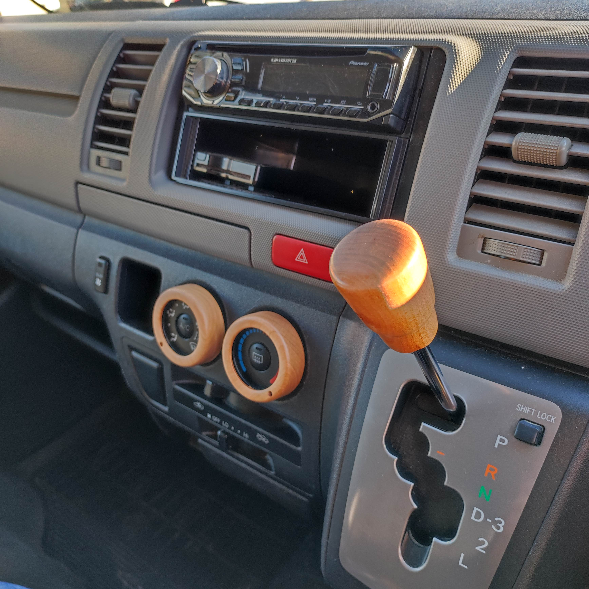
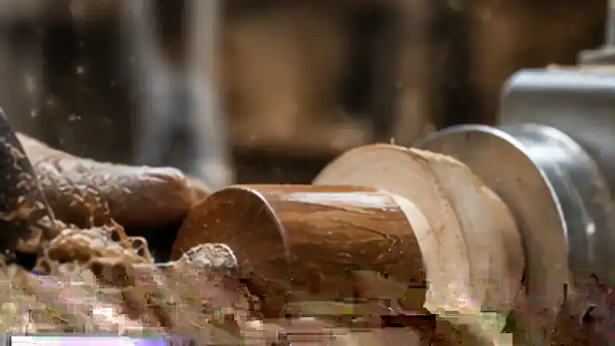
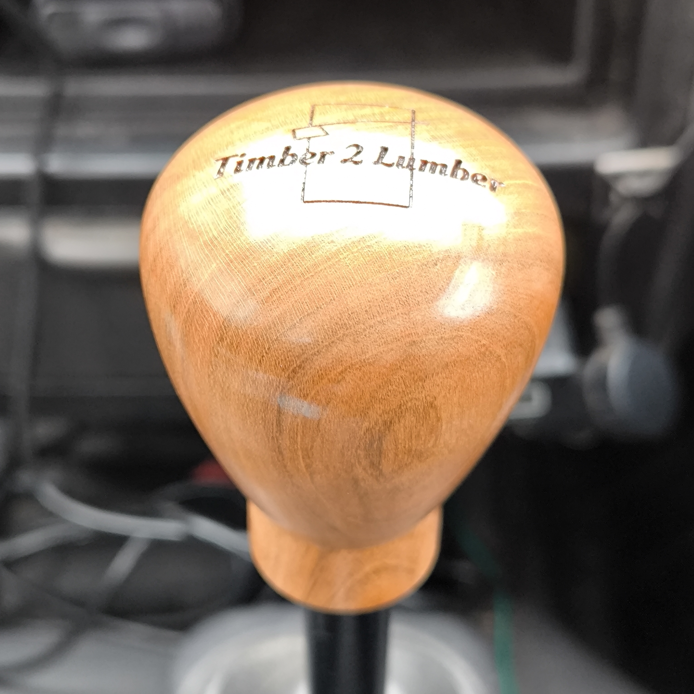
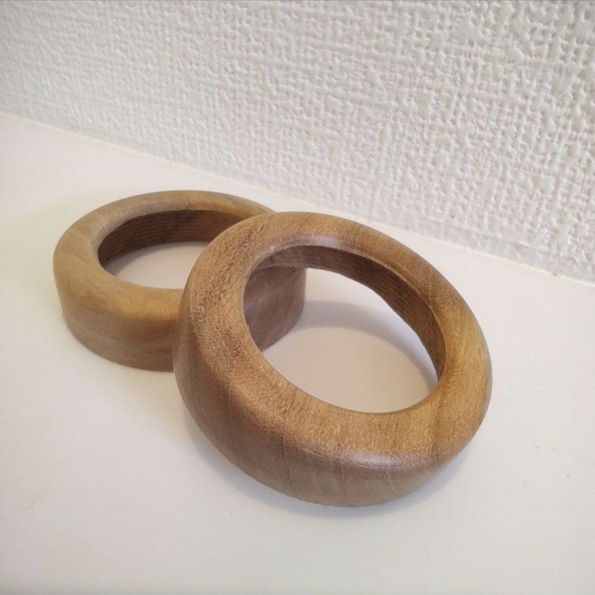
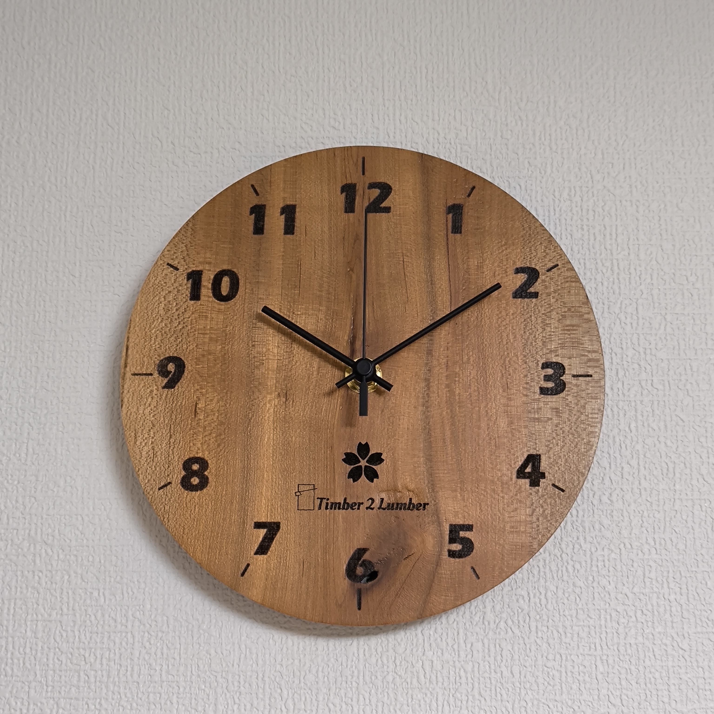

その木に、似合うものを。
木目も、形も、寸法も、一本ずつ違う。つくるものを先に決めて木を当てはめるのではなく、その木を見て、何にすればいちばん魅力が生きるのかを考える。その一本にしかない個性を、日常で味わう贅沢へ。
AKITA / WOOD / AUTOMOTIVE
秋田で自ら木を伐り、削り、道具へ。
秋田の自社林で育った天然山桜を中心に、庭木や依頼伐採材、市場で出会った広葉樹まで。一本ごとの来歴と表情を見極め、時間と手間をかけながら、その木に似合う道具へ仕立てています。

WHY T2L / AUTOMOTIVE
木目も、形も、寸法も、一本ずつ違う。つくるものを先に決めて木を当てはめるのではなく、その木を見て、何にすればいちばん魅力が生きるのかを考える。その一本にしかない個性を、日常で味わう贅沢へ。
木でつくるだけでは、車の道具にはなりません。車種や取り付け規格を確かめ、きちんと使えることを前提に、木が車内に自然に馴染むかたちを考える。機能はそのままに、車内の景色を少しだけ特別に。
シフトノブは、眺めるだけのものではなく、毎日手に触れる道具。大きさやかたち、手触り、仕上げまで、握ったときの心地よさを考えて仕立てます。触れるたびに、木を選んだ理由が深まるものへ。
SHIMOHAMA / AKITA / JAPAN
秋田市下浜。日本海から望む国見山の西側に、Timber 2 Lumber の森があります。
夏、下浜の海はベタ凪になり、湖のように静まる。
冬は一転、日本海からの強風が雪を横殴りに山へ叩きつける。
静けさと荒々しさが同居するこの土地で、木々は一本ずつ違う姿に育っていきます。
私たちが見ているのは、樹種名や寸法でひとまとめにされた「木材」ではありません。
この場所で、この時間を生きてきた、その一本の木です。
FOREST TO LIFE
01 / FOREST
木材になる前の、一本の木を見る。樹種や寸法だけでなく、育った場所や姿まで含めて向き合います。

02 / TIMBER
自ら伐採し、丸太を製材。木の形や太さ、木目を見ながら、何にすればその魅力が生きるのかを考えます。

03 / SEASONING
製材した木は、桟を入れて積み、季節を重ねながらじっくり乾燥。山桜では数年をかけて、道具になる時を待ちます。

04 / PRODUCT
木目、形、寸法を見ながら、その木に似合うかたちへ。機械で精度と再現性をつくり、最後は手で触れながら仕上げます。

05 / TO LIFE
車の中に、暮らしの中に。毎日触れる道具として、木が育ってきた時間を日常へつないでいきます。
PRODUCTS

AUTO
毎日握る場所だからこそ、手触りも、かたちも、その一本らしく。山桜を中心に、車種や取り付け規格に合わせて仕立てます。

AUTO
シフトノブだけでなく、エアコンダイヤルやアシストグリップにも。木の質感を点ではなく、車内の景色としてつないでいきます。

LIVING
時計や照明など、暮らしの中にも木の時間を。その木の形や木目を見ながら、一本ごとに似合うかたちを考えます。
ORDER / FITMENT
車種への取り付け可否やサイズ変更、木の種類、オーダー制作についてご相談いただけます。まだ仕様が決まっていなくても大丈夫です。
分かる範囲で車種や年式、取り付け部分の写真などをお送りいただくと、よりスムーズにご案内できます。ご相談いただいた時点で注文が確定することはありません。
オーダー・適合について相談するBRAND CONCEPT / MA
早さや効率がもう充分に行き渡った暮らしへ、
木目の奥に山が見える贅沢を。
木が育つ時間。伐られた木が乾く時間。道具として形になる時間。そして、使う人とともに過ごしていく時間。
早さや効率だけでは生まれない、その余白を Timber 2 Lumber は「間」と呼んでいます。
そして、その「間」こそが、私たちが届けたい一番の価値です。
Timber 2 Lumber
SHOP / FOLLOW